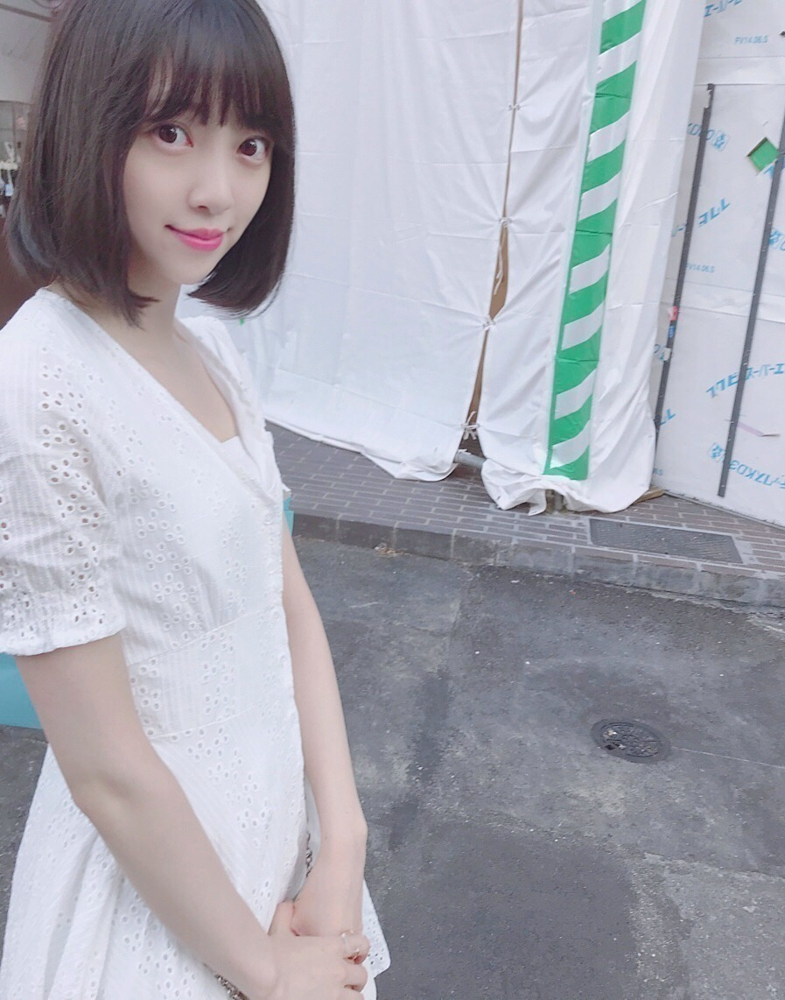
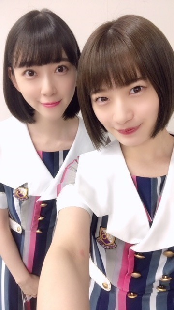

2018/0910Mon遣る瀬無いなって。
こんばんは
もうすっかり秋の風が吹いていますね
炊き込みご飯、さんま、栗
食べたいなぁ
甘党ではないので秋も変わらずご飯系がすきです。
皆さんも
秋の味覚は好きですか？

堀未央奈です
最近はずっと体調を崩していて
たくさんの方に迷惑や心配をおかけしました
健康第一で成り立つこの活動。
改めて体調管理をもっと頑張らないと、と
思いました...
だいぶ良くなり今は元気に生活しています。
気をつけます。
優しい言葉を掛けてくださった方々
ありがとうございました。
秋冬服が好きなのですが
ニットとかふわふわなものとか
あとコートもいろんな種類、
デザインのを
今年は集めたいなぁと思っています。
くすんだクレヨンみたいな
色もかわいいけど
はっきりとした赤、茶も最近は着るんです
秋冬は、
フランスの女の子みたいな
柔らかさの中に個性もあっての服やメイクに
挑戦したいなって思っています！
自分を表現できるもの
例えば私服やメイクもだし
いろんな撮影やブログの書き方など
堀未央奈 をどう表現していこうか
常日頃、模索しながら生きています
だからいろんなものにアンテナを張って
不器用で何もできないからこそ
"挑戦"を繰り返しているのかな...
私探し
一生のテーマで
簡単には見つからなさそうだけど
少しずつ少しずつ
私を好きになっていって
好きになってもらえたら
それ以上の幸せは無いかなって思いました。
頑張りたいです
そういえば
ずっと行きたかったフランスの
マレ地区には車で通っただけで
ちゃんと見れてなくて...
凄く心残りなので
いつかゆっくりヨーロッパ巡りの旅したいです
発売中のarもよろしくお願いします☺︎

気づけば白ばかり
な夏でした
白はずっと好きな色です
何色にも染まらないまっすぐな色
でも、何色かを混ぜたら
綺麗にその色に染まる
一番、柔軟でカメレオン的な色だから
憧れます
今年の秋はどんな色になるかな〜
不安もあるけど
楽しみな気持ちもあるし
私は自分を信じて
頑張りたいなって心から思います
嬉しいことも悔しいこともあるから
頑張れるのかな。
嬉しいことばかりだったらいいのにね。
遣る瀬無いとき、
どうしたらいいかわからなくて
何もかもが嫌になりました。
でも、絶対負けたくないし
逃げたくないって必ず思うんです
守りたいものがあると
実現させたい夢があると
人は
頑張れるんだなって...
そう感じた日でした。

肌寒くなってきたので
皆さん、体調には気をつけてください。
私も気をつけます。
美味しいもの食べに行きたいな〜
ちょっとした秋旅に2期で行ってみたい☺︎

優しいかなさん。
かなさんに会うたび 好き！と愛を叫んで
必ずあしらわれますが
かなさんも私のこと好きだと思う...
かなさん〜
ご飯行きたいです〜

では！
2018/09/10 20:36


コメント(675)
未央奈の事も2期生の事も全部応援してる！
体調の方はどうですか？
みおなさんは頑張り過ぎるところが
あると思うので心配です
全ツのファイナルもとても心配でした
やはり身体を先決に考えてくださいね
福岡のシークレットグラフィティー
めちゃめちゃ可愛かったです！
しかも今回は
みおなさんの生写真が
めちゃめちゃ当たって一人でガッツポーズを
かましてましたw
はやく本調子の笑顔なみおなさんが
見たいので今は体調回復に
専念してくださいね✨
またの更新をお待ちしてます！
私たちが思うより未央奈ちゃんが進んでいる道は辛くて険しいものかもしれませんが、そんなときこそファンで支えていけたらいいなぁと思ってます
いつも貰っている元気を少しでも未央奈ちゃんに返せたらいいなぁ……
これからも応援しています、体調を崩さない程度に頑張ってください！！
未央奈ちゃん大好き！
どんなに辛くても負けないぞっていう意思を持って全力で生きてるみおなさん、本当に素敵だと思います！
これからも体調に気をつけて、一所懸命活動していってね！！
秋の味覚は秋刀魚を食べたよ。
栗ご飯とか旨いよね。
長い人生いろんな事があるけど、お互い頑張りましょう！
北海道は朝晩は寒いよ～。
鼻水が出ちゃう。
あなたも風邪ひかないようにね。
あったかくして寝ましょう。
お休み。
かなりんとなんかお仕事あったわけ？
秋は特徴が無いと言われることがあるけど逆に自分の個性が出る季節なのかもしれないね
やるせないときあるよね
やるせなさを感じるのは頑張ってるんだからもっといい結果が出てもいいだろうという努力の証拠なのかも
自分も最近チームが上手く成果を挙げられなくて、そのせいで内輪揉め状態でやるせない気持ちだったんだけど、本音で話し合ったらみんな全力でチームを良くしようとしてただけなんだってわかったよ。仲間のチームへの強い思いを知れて嬉しかったなぁ
お互いに幸せな秋になると良いね
フランス語の勉強楽しいよ！
体調にも気をつけてね！
また元気な姿をみせてください！
では！
なぜか読みながら泣きそうになった、
それくらいなんか引き込まれるものがあった…
遣る瀬無い時って、なかなか何もしたくないぐうたら者な私だけど、ブログ読んで頑張ろって思えた
ありがとう❤︎ 無理せずに頑張ってね☺︎
おっしゃるように健康第一です。
若い時はそんなことと気にしない人も多いみたいですが、身体の不調は心や笑顔、他人への思いやりも妨げると思います。
なので健康を維持することも乃木坂活動の大きな仕事です。
それから悔しいこともあるから心が柔らかくなり、他人への思いやりもででくるのだと思いますよ。
嬉しいことだけでは慣れてしまい成長していきません。
なので辛かったり、悔しかったりしたときこそ、ジャンプのチャンスです。頑張って！
また、不器用でいいんです、だからこそ、一生懸命になれるんだと思います。時間はいっぱいありますし、味方になってくれるので、成果を焦らず、待ちましょう。必ず、光は見えてきます。
さらに、好きになって貰うと同時に相手を好きになってみてはいかがでしょうか。
きっと、歩み寄りの精神でいい絆が生まれると思います。
応援しています。
いいブログをありがとうございます。
体調大丈夫？無理しないでね(>_<)
今日は岐阜の高山に来てるんだー
大雨で全然観光できてないけど(-.-)
でも岐阜県いい場所だね(^^)
みおな体調気をつけて！無理しないでな！
ご飯も美味しくていい季節がくるね
昨日の全国握手会お疲れ様でした
行ってないですけど、どうやら最後まで休まずに参加出来たみたいで安心しています
元気になってきて本当に良かったです
何をやってもうまくいかなくて遣る瀬無くなったり逃げ出したくなる事は、自分もあります
でも、時には逃げてもいいんじゃないですかね
今は逃げても、後で戻って来ればそれは逃げてはいないから
そこで戻らずに終わらせたら初めて逃げた事になるんだと思うので、ちゃんと戻って来れば逃げたっていいと思います
人間は弱くはないけど強くもないから、抱え込み過ぎないで下さい
自分の知る限り、堀ちゃんが逃げてる所なんて見た事ないからすごいです
お盆明けてから、涼しくなって今日は少し寒いくらいですね
半袖もそろそろ納め時ですね
サンマ大好きだから、今年もたくさん食べたいです
これからも応援してますので頑張って下さい
ありがとうございました
握手会いこうと思ったら、人が多すぎて…並べなかった…ごめんね…でも次のシングルの個別は行く！
宮城のライブでは未央奈の姿みれなかったけど、ミニライブで観れてよかった！ちょっと元気がなかったのかな…って感じた。まぁ扁桃炎が完全に治りきってないのかなぁ。無理せずにゆっくりでも体調を治して、早く完全回復した元気な未央奈が見たいです！
ずっと応援してます！
本当に嬉しいことだけだったら良いのにって私も
思いますが
悲しいことや寂しいこともあるから
それを超えた
嬉しいことがあった時
人はすごく心が弾むんだなって共感しました
体調不良すごく心配ですので
まずは少しでも早く良くなりますように…。
完全復活までファンは温かく見守ってくれるよ。
写真集のタイトルの「君らしさ」のようにこれからも頑張ってほしいです！
自分はいつまでも応援しますんで
あと、体調にはくれぐれも気をつけてください！
崩したくて崩す人なんていないと思うんで笑
堀ちゃん体調治ってきてよかった！
堀ちゃんの言葉は自分の気持ちをストレートに表現していて、心にすっと響く、だから自分も頑張ろうと思えたり、勇気をもらえます。ありがとう。
これからも頑張ってね、応援してます。
秋は毎日梨を食べてるよ
田舎のばぁちゃんが送ってくれるのさ
甘くてみずみずしい～
りょーへー(R.N.イナダウアーびーむ)だよ♪
今日から、宮城県でボランティアしてるんだ！初めてのボランティア、楽しみながら、色んなことを学んでいきたい！
#毎日コメント
#今日もお疲れ様
#ブログへのコメントは
#後日しっかりするね
#明日も楽しみおな♡
#おやすみおな(*￣ー￣)
無理しないで
色々大変だと思うけど応援してる
昨日握手行けなくてごめん 時間なかったのおおおお
個握行くからね！！！
今日も一日お疲れさまでした。
昨日の全国握手会、ありがとうございました。
未央奈の顔が見れただけでも良かったです。体調のことが本当に心配で心配で。。。休憩を挟みながら、マスク越しの未央奈だったけど、元気そうなのが伝わってきましたよ。安心しましたm(_ _)m
それと自分の番になった時、未央奈が「あっ」って気づいてくれて、パッと表情が変わって。たくさんの方が訪れるなかでも、自分が来たって気づいてもらえるのは嬉しいです。
自分が喋ろうって思ったら先に未央奈が話し出して。「ねこ、今日は白Ｔシャツだね！」って言われて、予測してなかった一言だったので、何も返答できなかった…笑 ごめんなさい。。。
今度は仙台に行くので、その時いろいろお話しできたら。未央奈にどうしても伝えたいことがあるので。。。
体調管理が大切なのは、どの仕事も共通なんだと思います。未央奈には決められたスケジュールがあって、それを休んでしまうことで迷惑をかけてしまうというのも重々承知のことです。その世界を少しだけ見てきたので。
でも、何かの拍子で無理をして一生をダメにしてしまう可能性だってあるんです。僕が言えるような立場ではないけれど、体調を崩してしまうことで自分を責めるのは良くないと思います。それこそ体に毒です。。
これは一生向き合っていかなきゃいけないことだと僕は思います。心苦しくなることを100%理解することはできないけど、100%に近い数字で未央奈の苦しみや悩みとか、辛かったこと。共有して解決する方法や、新しい道が見えてくるかもしれないって思って。
・・・なんかこのまま話し続けてたら暗くなる一方なのでやめます！
このブログのタイトルは「遣る瀬無い」ってなってるけど、未央奈は前を向いて明るい気持ちで進んでいこうとする内容で。未央奈らしいなって思います。
「芯の強さがある人」は、目標があるから頑張れる。きっと未央奈の言う通りなんだと思います。それに向けて頑張ることが、次の挑戦に繋がる。
僕はそれを応援するために、役に立ちたいです。もしもこのコメントが未央奈のもとに届いて何か変えられるのなら、嬉しい限りです。。。
じゃあ最後に。
秋ごはん、楽しみです。
僕の地元・沼津では桜エビの炊き込みご飯が美味しいんです。桜エビの風味がいい香りで、そこにさんまがあれば完ぺきです。未央奈の家でもぜひ試してみてくださいm(_ _)m
体調管理には、これからも気をつけていこう。
僕も気をつけていきますね。。。
ではでは、ねこでした。
これから夏終わって秋になるから寒くなってまた体調崩さないよーにね！
また夏の未央奈とは違う未央奈が見れるの楽しみにしてます！
お元気そうでなによりです。あまり無理はしないでくださいね！
未央奈の自分探しの挑戦をいつまでも見守らせてもらいたいです。
秋の味覚は、やっぱり栗かなぁ。栗ご飯が最高に好きです！
またコメントさせていただきます！
お疲れ様。
私は秋の風も感じながらも、ガッツリ残暑も感じています笑
握手会も涼しいと思って日焼け対策しないで行ったら腕日焼けしましたよガッツリとね。涙
秋の味覚、もちろん好きですよ！(*´-`)今日はお高い天麩羅屋さんにてランチしましたが、今年の秋は天麩羅で秋の味覚を頂こうかな？？
ま、ね。お仕事は全て健康でなければうまくない物ですがたまには身体壊すこともあるさ。人間だもの。(*´꒳`*)
私は未央奈の事様々な面で本当に尊敬していますが、それとはまた別で未央奈も普通に1人の女の子だとも思っています。護ってあげたいと思っています。
色々葛藤もあるだろうけどね、一人で抱え込まないで甘えてね！(*´-`)
うん。良いよね秋冬の服〜。ちょっと夏物の服よりお高いけどね笑 レイヤードがしやすいし！夏は暑くて重ね着出来ないもんね笑
あらー！ヨーロピアンな未央奈が今年はみれるかも？？(*´꒳`*)すごい楽しみ♬ファッションたのしもーね！
未央奈らしいなって思うよ。^ ^ でも未央奈、一個だけ覚えておいて欲しい事があるよ。不器用であろうが、実は弱い面もあったりしようが、君には君の良さが沢山あるよ！(*´꒳`*)
たしかに未央奈の顔や容姿も好きです。けれども私は例え顔とスタイルが良くて世界一のアイドルであったとしてもここまで好きにはならなかったと思います。むしろ不器用でも弱くても頑張ってる、そんな姿にも惹かれるものですよ^ ^
私が尊敬する偉人の1人、孔子であっても心の迷いが無くなったのは40だったと言います。まだまだお互い沢山迷って泣きつつも乗り越えて、大きくなりましょう！
白色の話。懐かしいね(*´꒳`*)去年も話してくれたよね。今年はどんな色になるのか、私にも是非見せてくださいね♬
自分を信じて。(*´-`)
これが一つ未央奈を尊敬しているポイントだよ。自分を信じる事ができるのは本当にすごい事だよ。そうだね、私も未央奈にあなたの事も信じて頑張るって言えるように頑張るかな！w
遣る瀬無い…か。
もしまたどうしようもない気持ちや、高い壁でくじけそうになったら是非ブログ更新してくださいませ。あなたに言葉を贈らせて頂きます。どうしようもないなら道を切り開くし、高い壁なんて横から超えさせてあげるし！(*´-`)
うん、そんな感じ。(*´ー｀*)
では、おやすみなさい
ぽてとです！
すっかり朝晩は冷えてきて
夏が過ぎていくのを実感。
さんまが今、無性に食べたい衝動(笑)
秋は本当食欲の秋だね♪
元気なのが一番ですからね。
秋は柿が食べたい。
昨日は大丈夫でしたか？
お仕事も大事ですが自分の体調を第一優先にしてくれると嬉しいです。
無理はせずに頑張ってください！！
なーんて偶然！
今日の晩御飯に炊込み御飯作ったよ！
嫁さんが遅かったから、先に帰って作ったんだ！
ワラビと椎茸と油揚げと、彩りに人参！
結構美味しく出来たよ。二合炊いたから、まだ明日の
分まであるから、食べに来る？
なーんてね。
身体、気をつけたほうがいいよ。
健康第一ですからね。無理しないで、ゆっくり
休んでください。
そして、食べて治す！これ、堀ちゃん流！かな？
ほくも、食べて、寝て治す派です。(笑)
最近、なぞの落書き、気に入ってます！
また今度会えるの楽しみにしてるよ！
やるせない、でもそこから逃げない未央奈カッコイイ！！
すこー！！！！！！！
未央奈の体調すごい心配だけど、少しずつ良くなってるようで安心しました！
僕は未央奈のこともかなりんのことも好きなので、その新しいツーショットを見れて嬉しいです！
これからも無理しないで頑張ってね！！！
可愛い画像にほっこり(笑)
徐々にでも前に進めば良いんだからあまり悩まないようにね
気分がふさぎそうになったら酒
明るく楽しい事考えて生活するんだよ
牛タンもめっちゃ美味かった…
未央奈がライブ居なかったからちょっと寂しかったぞ！
体調に関しては気をつけていても、どうにもならない時もあるから、自分が出来ることとしては風邪ひかないようにすることと、睡眠時間を確実にとるようにすることじゃないかな？と思います。
みおなはかなりんに甘えたいんだね。かなりんに絡んでいる時、どんな雰囲気なのか状況見てみたいわ。
次回は名古屋で会えるかな？
昨日の握手会に僕は行けてないので未央奈が元気な姿を見れてないのですが、こうしてブログで未央奈の口から良くなったという言葉が聞けてよかったです！
本当に未央奈の何事にも挑戦する気持ちは凄いと思うし、たくさんの物事にアンテナを張って少しでも多くのことを吸収しようとする姿勢は尊敬します。
でもそこで気を張り詰めすぎないようにして下さいね！
未央奈はすごく頑張る人だからこそ、無理をしたり、考えすぎたり、そんなことがあると思います。
それを続けると体調を崩したり気持ちが落ち込んだりしてしまうことになりかねませんので、あまり無理をし過ぎず体調が悪いと思ったらしっかり休んで、考え過ぎて辛い気持ちになったり自分を失いそうになったら一旦美味しいものを食べてメンバーや友人などと話したりはしゃいだりしてリラックスしてくださいね！ファンの1人として未央奈の辛そうな顔は見たくないので！！
上記のことを踏まえた上で、未央奈の頑張り挑戦し続ける姿を僕はずっと応援し続けたいです！！
本当に、体調にはくれぐれも気をつけてくださいね笑
これからも無理せず頑張ってね！
10/13の個握行くよ〜！
きらきらしていてとても素敵です
あと、今日も可愛いですね！
だいぶ回復してきたみたいで、本当によかった〜
秋の味覚が食べられる時期は、これからまだまだ続くし、
秋の味覚は優しい食べ物が多いから、少しずつ味わって秋を楽しんでね。
未央奈が色々考えたり想像したりしてる秋冬の服やメイクを
いつか見られる日が来るといいなー
もし見られたら、見た瞬間に秋冬を感じて、それと同時に、
あ、あの時未央奈が思い描いてたのはこれかーって思うかもね。笑
自分探しをしてる未央奈だけど、
そんな中でもブレない気持ちを持ってる未央奈。
そんな未央奈から、俺はたくさんの魅力を感じてて、既に大好きだよ〜
ということは、更に未央奈のことが好きになっちゃうってことかー笑
未央奈自身が思う姿や目指す夢に向かって頑張る未央奈を応援するよ！！
みおなちゃんお疲れ様です！
もう秋ですねー
吹く風は冷たくなってきて、秋の匂いもしてきて、鈴虫が啼いてると夏が終わったなと感じますネ！
「未来ってのは 希望だ
希望ってのは 生命だ
夢を見るうちは 必ず明日がある」
「頑張ればどんな夢でも叶うなんて言うつもりはないわ、
苦しんだ分の見返りは誰にも約束はできない。
それでも、
手に入れるのはそれを望んだ者だけよ。
以上。」
いつも応援してます！
ちょっと気温が下がり始めたから気をつけてね (｀・ω・´)
しばらく直接会いに行けないけどテレビの前で応援してるから、頑張ってね、arもみるよー
コメントする